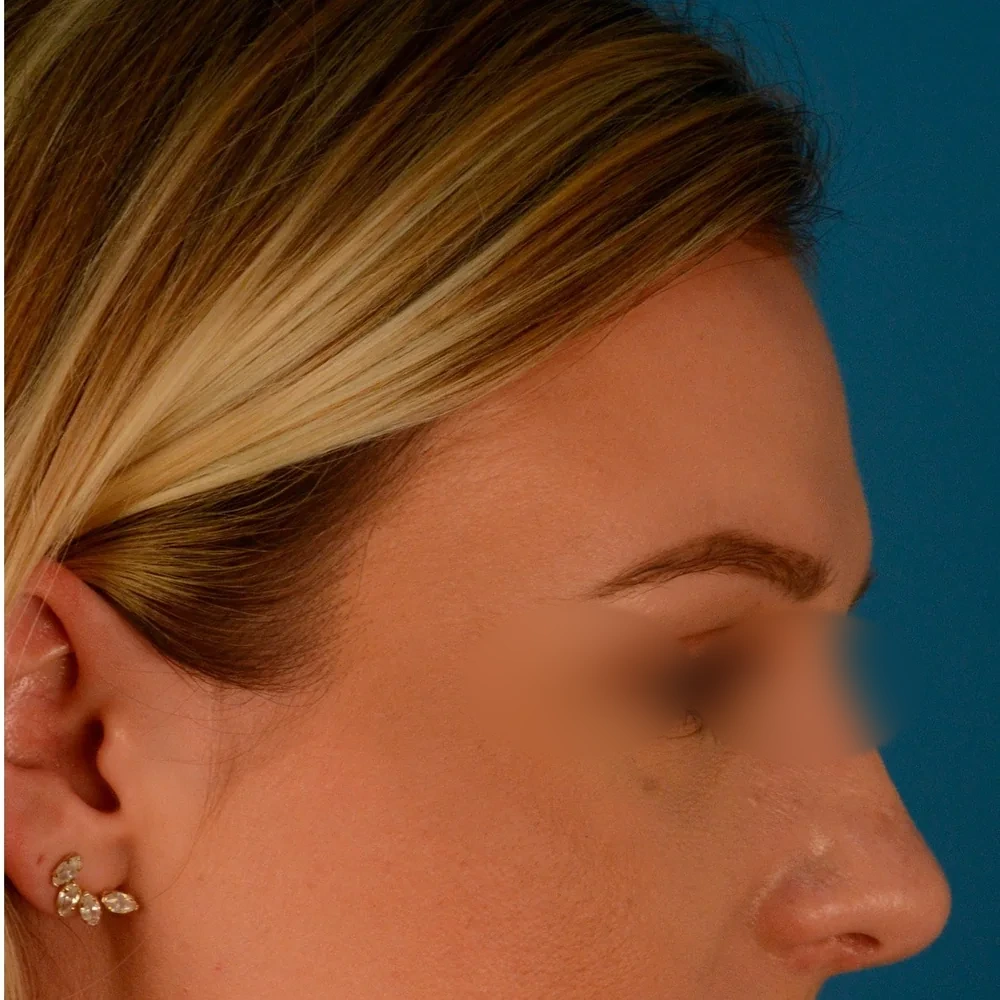
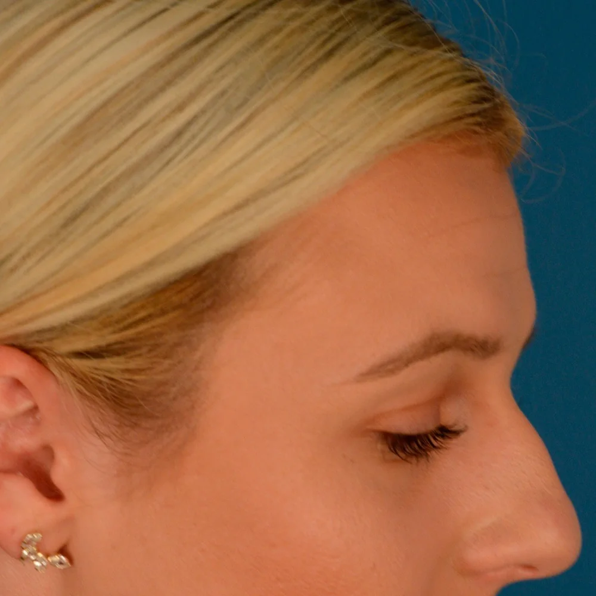

Ksenia
#ENT #Nose

<Before>

<After>
Septoplasty + nasal bone correction | 30 · Europe & US · After 6-week follow-up
Procedure: Nose surgery | Technique: septoplasty + nasal bone osteotomy | Anesthesia: General anesthesia | Recovery: stitches out in 1 week / no intense exercise for 6 weeks
For years I could only breathe through one side, and it got worse when the seasons changed. At night I needed a spray to sleep. My bridge also leaned to one side, and the crookedness was visible from the front.
The doctor said my septum was clearly deviated and already affecting airflow, so correction was recommended. Since we would be opening the nose anyway, the nasal bone asymmetry could be handled at the same time. She stressed again and again that this was a function-first surgery, with only the necessary cosmetic improvement.
The most direct change after surgery was breathing. For the first time I could inhale through both sides at once, and I could sleep without a spray. Six weeks later my profile line was smooth and the front asymmetry was no longer obvious, which was a bonus.